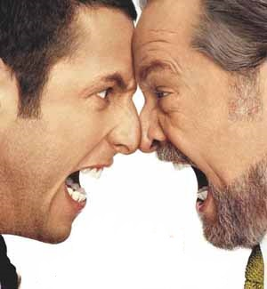

This is the closing track of Metallica's tenth album, Hardwired... to Self-Destruct. Colombian radio station Radioacktiva asked vocalist James Hetfield whether the "Hardwired... To Self-Destruct" title was inspired by how people are connected to each other through mobile devices and how everyone is becoming more dependent on technology.
Moonlight Sonata
La Sonate no 14 en do dièse mineur, opus 27 no 2 de Ludwig van Beethoven, surnommée « Sonate au clair de lune », fut composée en 1801 et publiée en 1802 avec une dédicace à la comtesse Giulietta Guicciardi, jeune femme de dix-sept ans dont le musicien semble avoir été amoureux.
Macron président
"Votre responsabilité est d'aller partout en France pour porter ce programme. Et pour gagner. Ce que je veux, c'est que vous, partout, vous alliez le faire gagner. Parce que c'est notre projet", a lancé le candidat à la présidentielle en conclusion de son discours porte de Versailles à Paris, ce samedi
Mouvements
Nom
Description
Illustration
Insolence
Manque de respect ayant le caractère d'une insulte. Qui manifeste un manque de respect injurieux.

Ignorance
L'ignorance est un décalage entre la réalité et une perception de cette réalité, décalage qui est la conséquence d'une croyance, d'un préjugé, d'une illusion ou d'un fait avéré de ne pas savoir.
Infamie
Flétrissure imprimée à l'honneur, à la réputation, soit par la loi, soit par l'opinion publique. Caractère déshonorant, honteux, vil, d'une chose, d'un acte. C'est une infamie de manquer à sa parole.